We study energy-efficient locomotion for a small quadruped rat robot performing a trot gait. As learning-free references we use a Central Pattern Generator (CPG) Planner and an open-loop Planner-simplified variant. We then train a reinforcement-learning controller on top of the CPG (Ours / CDER) that tracks the same commanded velocity while minimising actuation effort.
At a matched forward speed of ~103.5 mm/s, the learned controller attains a cost of transport (COT) of 3.72, versus 5.69 for the Planner and 4.67 for the Planner-simplified baseline — roughly a 35% reduction relative to the planner. An energy-balance audit (closure validation) confirms the savings come from less negative/antagonistic work and lower contact and friction dissipation, rather than from measurement artefacts. This page collects the side-by-side locomotion clips and the quantitative figures behind these results.
In biology, animals tend to minimize the energy cost of locomotion. A striking example is horse racing: the winner often adopts a gait with high cadence but without a bouncy stride — efficient forward motion with limited vertical oscillation. This motivates our work on learning rat-robot trot gaits that reduce mechanical cost while preserving stable, low-bounce locomotion on limited onboard energy.
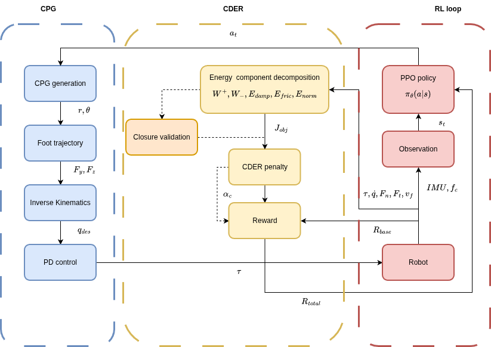
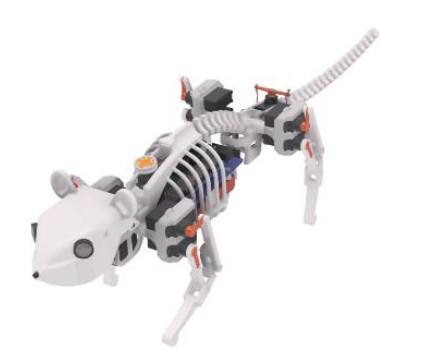
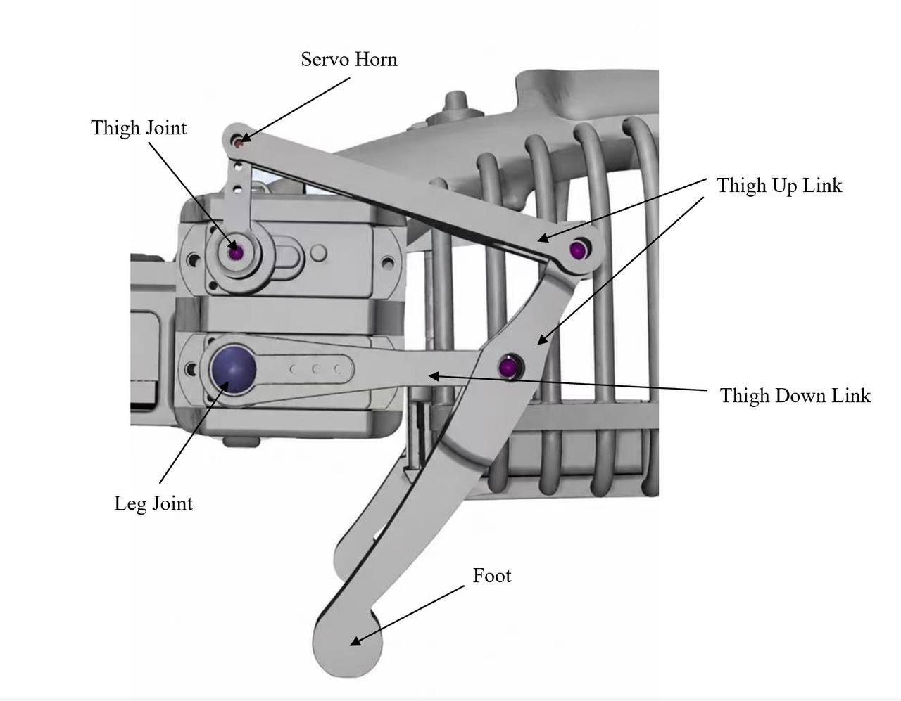
Steady-state window, matched speed ~103.5 mm/s
| Controller | Steady COT ↓ | Speed (mm/s) |
|---|---|---|
| Planner | 5.69 | 103.3 |
| Planner-simplified | 4.67 | 104.1 |
| Ours (CPG-RL) | 3.72 | 103.5 |
Lower COT is better. Ours is ~35% below the Planner and ~20% below the Planner-simplified baseline at the same speed.
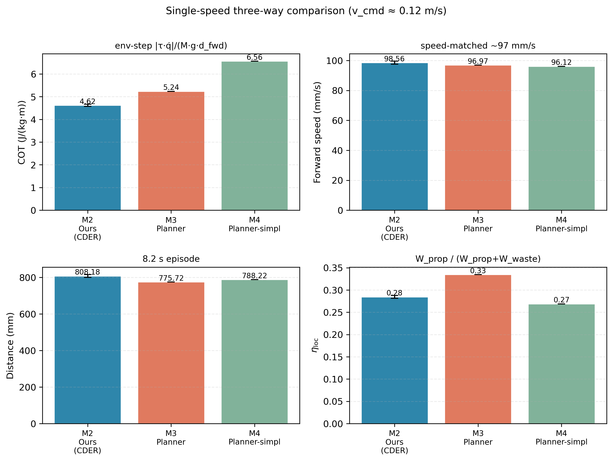
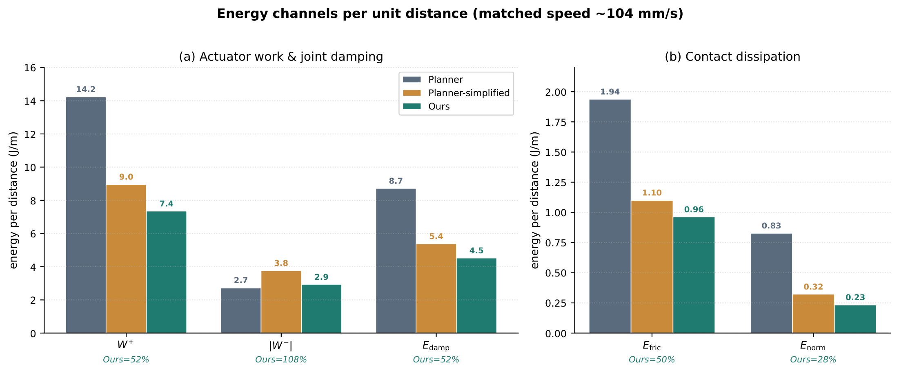
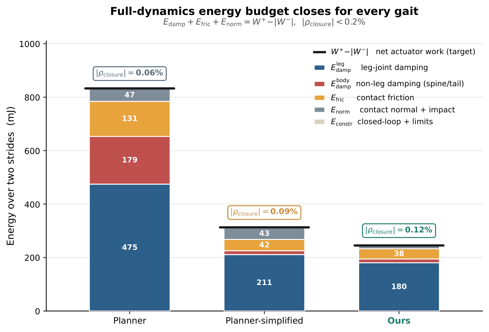
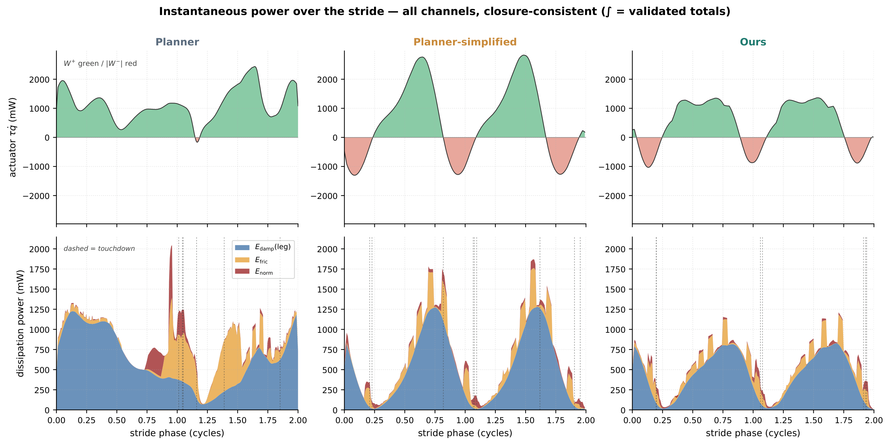
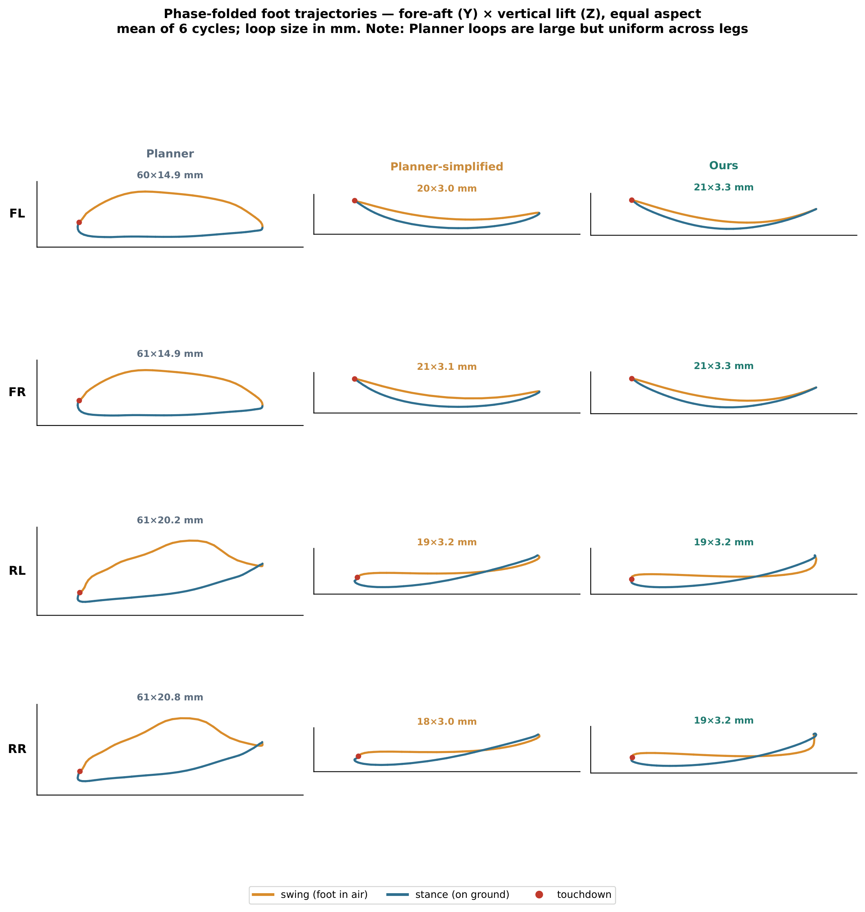
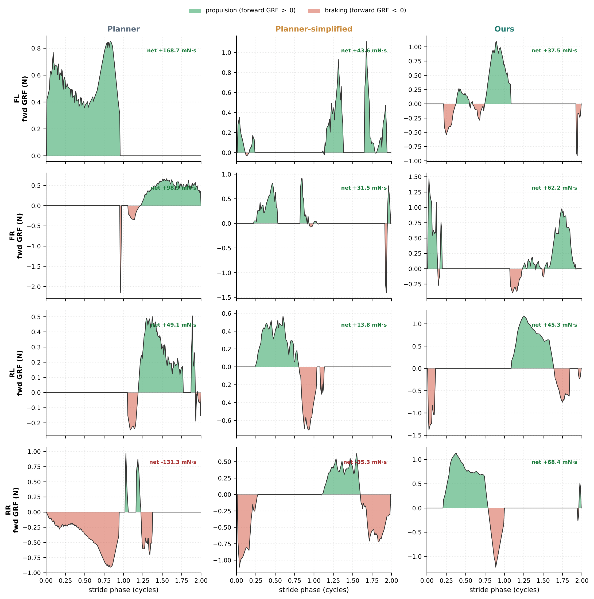
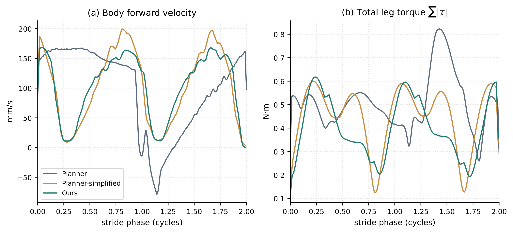
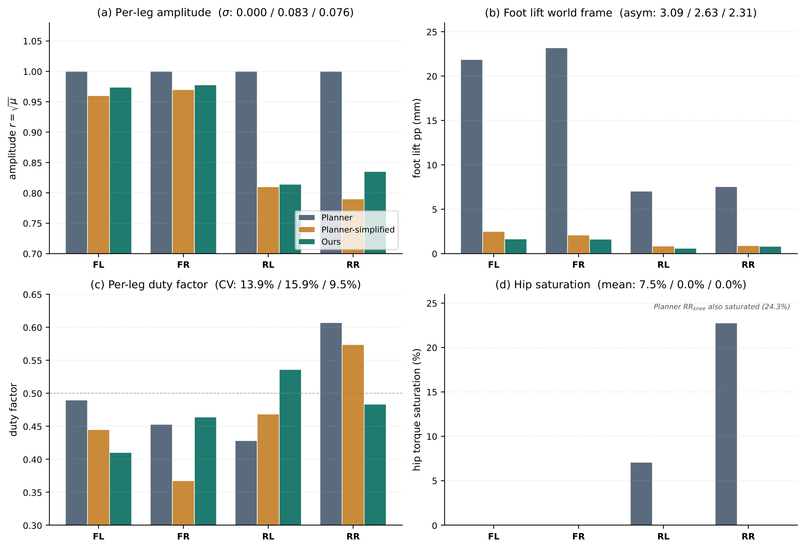
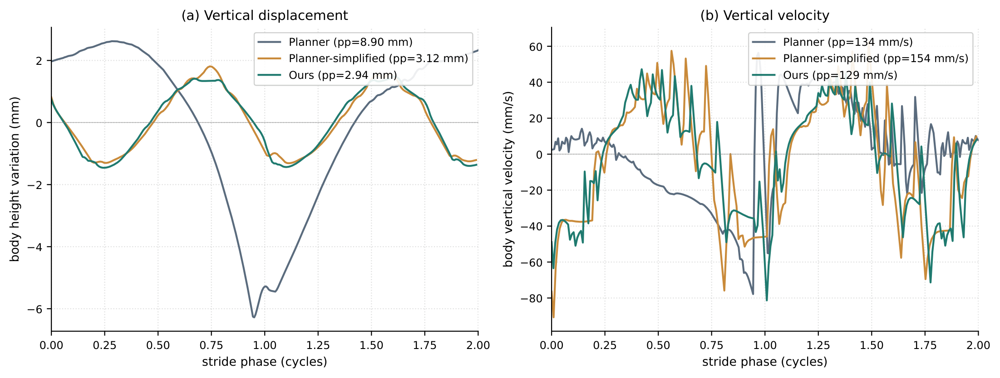
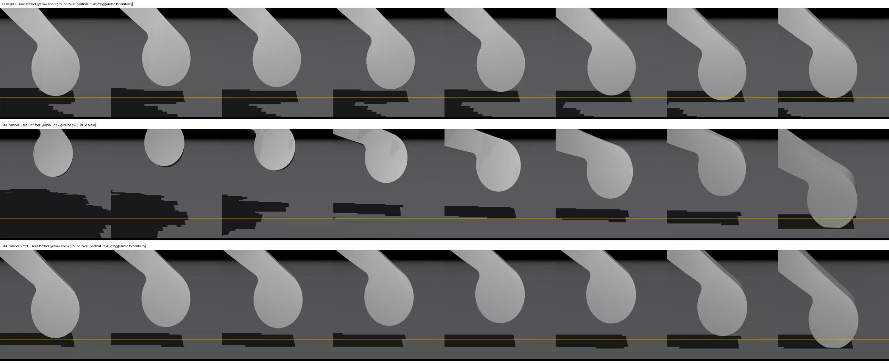
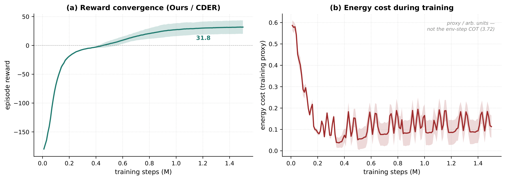
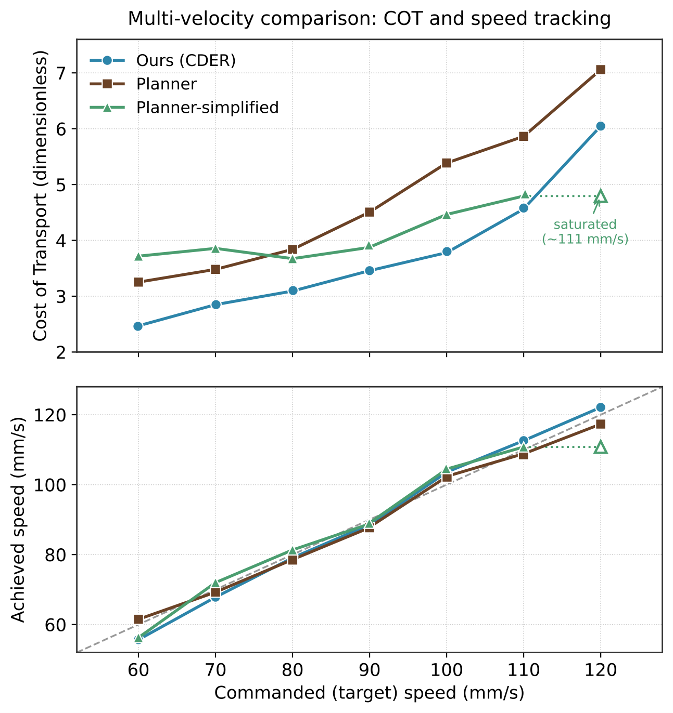
| Ours | Ablation A (w/o αnorm) |
Ablation B (equal weights) |
|
|---|---|---|---|
| Design components | |||
| αnorm (top weight) | ✓ | ✗ | ✓ |
| Analytical hierarchy | ✓ | ✓ | ✗ |
| Steady-state locomotion metrics (20 episodes) | |||
| Cost of Transport (dimensionless) | 3.72 ± 0.03 | 4.25 ± 0.02 | 4.95 ± 0.02 |
| Forward speed (mm/s) | 103.5 ± 0.2 | 74.2 ± 0.4 | 74.4 ± 0.9 |
| Forward distance (mm) | 642 ± 1 | 460 ± 2 | 473 ± 5 |
| Lateral offset (mm) | 12.8 ± 11.9 | 24.2 ± 9.4 | 15.0 ± 11.0 |
CDER weight ablation: design-component status (✓ preserved, ✗ removed) and four-metric performance. Twenty deterministic episodes per policy; all metrics on the steady-state window (first 2 s transient discarded). Values are mean ± std; bold marks the best per row.
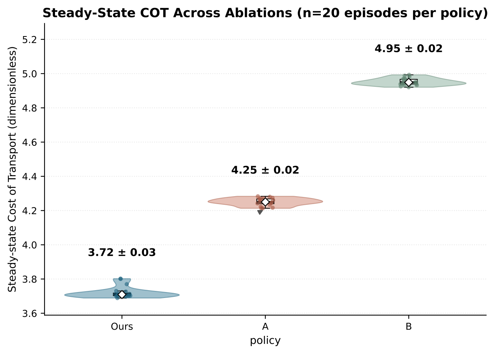
Single-view sagittal rollouts at the same steady-state window.
@mastersthesis{zhuang2026cpgrl,
title = {Optimizing Gait Energy Consumption in a Rat Robot Using CPG-RL},
author = {Zhuang, Simiao},
school = {Technical University of Munich},
year = {2026}
}